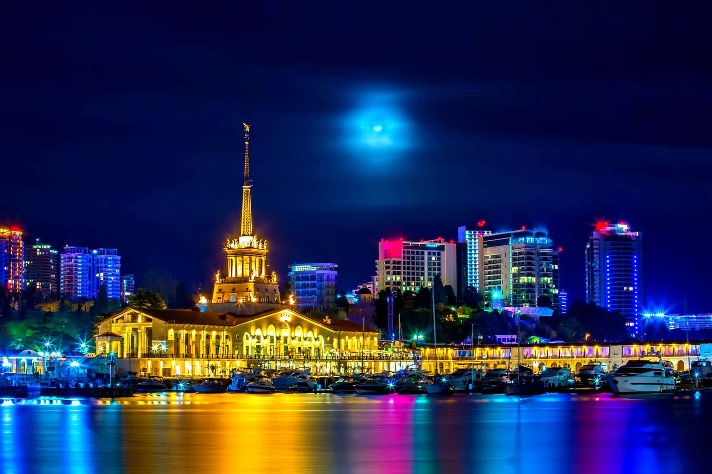
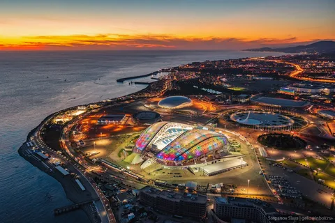

город сочи
Со́чи город на юге России, расположен на северо-восточном побережье Чёрного моря (Черноморское побережье России) в Краснодарском крае, на расстоянии 1615
Сочи — крупнейший курортный город России и важный транспортный узел, а также крупный экономический и культурный центр черноморского побережья России. Неофициально именуется также летней, южной и курортной «столицей» России. В 2012 году журнал Forbes признал Сочи лучшим городом для ведения бизнеса в стране. В 2007 году Сочи избран столицей XXII зимних Олимпийских игр.


"